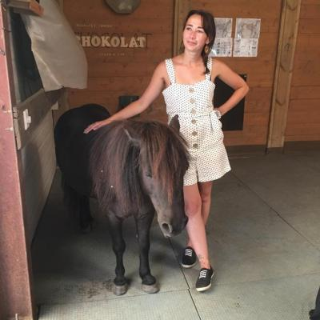

Jolie formule qui m'a été soufflée par une merveilleuse et douce âme !
On oublie trop souvent que les animaux ont une âme, pourtant ils sont dotés d'une âme pure et fragile. L'expression "dévouer corps et âme" est parfaitement appropriée. Ils se sacrifient parfois littéralement pour nous.
Il est temps de prendre soin d'eux, et s'occuper d'eux signifie aussi s'occuper de soi. La communication intuitive est un outil de développement personnel qui vous aide à avancer main dans la patte.
N'oubliez pas que vos animaux sont vos baromètres. En vous occupant de leur bien-être, vous améliorez le vôtre. Vous n'imaginez pas à quel point il est important de les écouter, de faire attention à eux. Ils sont véritablement des baromètres.
Ne blâmez pas un chien agressif ou un chat peureux, regardez plutôt au fond de vous si cet aspect n'est pas tapi dans un coin sombre de votre âme !
À partir du moment où vous prenez conscience que vous pouvez faire autre chose que blâmer la terre entière ou vous auto-culpabiliser, le travail commence et vous débutez un merveilleux chemin vers une vie plus sereine.
C'est à cet instant que je vous propose d'être le lien entre vous et votre compagnon, l'intermédiaire qui vous permettra de mieux vous comprendre et mieux vous entendre. Je serai le + dans votre duo 1+1. Voilà en quoi consiste mon travail et pourquoi je continue d'intervenir.
Je suis heureuse de pouvoir apporter ce petit coup de pouce pour que vous et votre animal ayez une relation harmonieuse.
Il est temps d'avancer, de prendre soin de vous, vous le méritez TOUS !!!!
